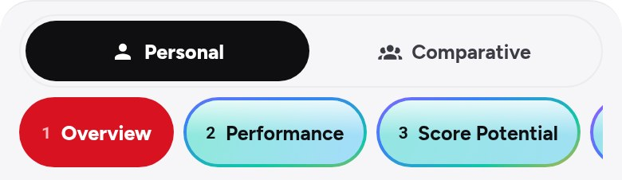
radius 999ring 2band 22part 32glint linedelay i × 160 ms
The app's Analysis, My Tests, Home, All India Series and Rank screens now wear one look: a glossy face, a band of light that crosses it, and a coloured edge that keeps running round it. This document lists every place it was applied, the exact colours, sizes and timings, and gives a tested web version (CSS + a small script) so the mobile website can look the same as the app.
Above: My Tests tabs and series day chips, drawn by the web code in this document (one still frame; on a page they move).
| Colour | Value | Where it is used, and what it means |
|---|---|---|
| Baby pink | #FFAFC9 → #FF82AB | My Tests → Completed tab. Series page → streak card (softer: #FFDCE8 → #FFB5CE) |
| Yellow | #FFEE5C → #FFD60A | My Tests → In progress tab. Rank → Rank predictor form (#FFD60A) |
| Sky blue | #9BDCFF → #52BDFF | My Tests → Saved tab. Rank → College compare form (#4CC3FF) |
| Sky blue + light teal | #A8DCFF → #8CEBD6 | Analysis → section pills and Report download card. Series → Upcoming day card (#C7F2EC → #96D2FF) |
| Blood red | #C1121F → #8A0B15 | Series → every day still to come (day chips and 50-day map). Rank → College predictor (#D10F2A) |
| Parrot green | #96EA3A → #46BE1B | Series → every day that is over (day chips and 50-day map), whether its paper was taken or missed |
| Five-colour edge | #FF3D9A #FFB020 #10C7A8 #3B82F6 #9B5CFF | Running edge of the Analysis pills and the Report card: pink, gold, aqua, blue, violet |
Ten pieces on five screens changed. Everything not listed here looks as it did before.
| # | Where | Before | Now |
|---|---|---|---|
| 1 | Analysis · 8 section pills bar fixed at the bottom of a result | Resting pills were plain text on the grey bar: number #74747E name #3C3C44. Open pill solid red. | Resting pills are glossy light sky blue ↔ light teal #A8DCFF → #8CEBD6 with near-black words, a 2 px five-colour running edge and a glint that travels along the row like a wave. Open pill unchanged (solid red #D91222). |
| 2 | Analysis · Report download | A small outlined button among the action buttons (white, 1 px line #DEDEE4). | One big glossy card, 358 × 152, at the top of every Analysis section: sky ↔ aqua #86CFFB → #66E0CC, 3 px five-colour edge, glint, three twinkling stars, soft sky glow under it. |
| 3 | My Tests · tabs | One grey segmented control; the chosen segment was black with white words. Order: In progress, Saved, Completed. Opened on In progress. | Three separate glossy pills, each in its own colour. Order: Completed, In progress, Saved. Opens on Completed. Completed = baby pink, In progress = yellow, Saved = sky blue. The open tab wears the full colour, a thicker edge, a glow and its count on a white chip. |
| 4 | Home · All India Series card | Onyx-to-ruby card with a still 1 px glass line #FFFFFF1A round it. | Same face. The line became a 2 px running edge (ruby, gold, rose); a soft gloss and a corner-to-corner glint were added. |
| 5 | Series page · streak card (top) | White card #FFFFFF, 1 px line #ECECF0, grey small words #74747E. | Glossy baby pink #FFDCE8 → #FFB5CE, running edge (rose, orchid, coral), corner glint. Small words in rose ink #5B3A46. |
| 6 | Series page · big day cards Today card and the selected-day card | Flat pastel cards. Upcoming was teal to teal #C7F2EC → #8FDDD3. | Same pastels, now glossy with a running edge in each card's own family and a corner glint. Upcoming is teal to sky blue #C7F2EC → #96D2FF. |
| 7 | Series page · day chips (DAY 1, 2, 3 ...) | Pastel chips by status (peach today, green done, teal upcoming, sand missed). Chosen day: 2 px black line. | Day still to come = blood red #C1121F → #8A0B15 with white words. Day that is over = parrot green #96EA3A → #46BE1B with black words. Today keeps peach to pink. All glossy with running edge and glint. Chosen day: 3 px black edge with one gold light running round it. |
| 8 | Series page · 50-day map | Pastel cells; far-away days faded to 35 %. Legend: Done, Today, Upcoming, Missed. | Cells use the chip colours: blood red to come, parrot green over, peach-pink today. No fading. Legend: Completed, Today, Upcoming. |
| 9 | Rank · six tool tiles | Black brushed-metal tiles, each only tinted with its colour (for example #25252A → #4A1122). | No black in the tile. Each tile is its own full colour: maroon, indigo, teal, blood red, gold, violet. Gloss, corner glint, three-colour running edge. The chosen tile glows in its form's colour. |
| 10 | Rank · form panel under the tiles | Dark panel with a still 1.5 px coloured line and a flat coloured header band. | The line became a 2 px running edge in three colours of the form's own family; the header band is glossy with a glint. The body stays dark. |
Every piece in this document is the same stack of simple layers. Only two things ever move or fade: position (transform) and opacity. That is what keeps it light on a phone.
| Layer | What it is | Motion |
|---|---|---|
| Running edge | A strip ring px thick round the piece (2 px; 3 px on an open or chosen piece and on the Report card). Its colours slide round all four sides. Built as a square as wide as the piece's diagonal + 4 px, filled corner to corner with the edge colours, turning behind the face. | One full turn every 4200 ms, linear, for ever. |
| Face colours | Two colours from the top-left corner to the bottom-right corner (tones). A piece that already has its own picture (Home card, Rank tiles, day chips) keeps it instead. | Still. |
| Colour swap | The same two colours the other way round, laid over the face. Fading it in and out makes the two colours keep changing places. Only for faces with two tones. | 5600 ms per cycle, ease-in-out: clear, full at the half, clear again. |
| Gloss | White light on the upper 56 % of the face: strongest at the top edge, fading to nothing. A plain gradient, no blur. | Still. |
| Glint | A soft band of white light, band px wide (clear, white, clear across its width). It crosses the face and then waits outside it. Line path (pills, tabs, header bands, Report card): the band is tilted 20° and slides left to right. Corner path (cards, tiles, chips): the band lies across the card and travels from the top-left corner to the bottom-right corner. | 3600 ms per cycle. It crosses in the first part % of the cycle with ease-in-out and waits for the rest. |
| Content | Words, icons and buttons. Always above every light layer, so text stays crisp. | – |
| Stars | Report card only: three 16 px four-point stars on the edge, twinkling one after another. | 5200 ms per star cycle, ease-out; each visible for about 0.9 s. |
| Glow | A soft coloured shadow under an open tab, a chosen tile, the Report card and a Rank form. It is a normal box-shadow; it does not move. | Still. |
| Motion | Length | Easing | What happens |
|---|---|---|---|
| Edge turn | 4200 ms | linear | rotate 0° → 360° |
| Glint cycle | 3600 ms | ease-in-out | crosses in the first 32 to 46 % (per piece), then waits |
| Colour swap | 5600 ms | ease-in-out | opacity 0 → 1 → 0; starts at 3 × the piece's delay |
| Star twinkle | 5200 ms | ease-out | 0 to 9 %: grow, turn 45°, appear · 9 to 18 %: shrink, turn to 90°, vanish · rest: hidden. Stars start at 500, 2233, 3967 ms |
delay), so the glint travels along a row like a wave: pills 160 ms apart, tabs 220 ms, tiles 200 ms, day chips 140 ms.Add shine.css (Appendix A) and shine.js (Appendix B) once. Then every piece is the same small block of markup with different
settings. The examples in this document are drawn by exactly these two files.
<!-- Example: one resting Analysis pill -->
<div class="jl-shine" data-part="32"
style="--r:999px; --ring:2px; --tone-a:#A8DCFF; --tone-b:#8CEBD6; --gloss:rgba(255,255,255,0.78);
--glint:rgba(255,255,255,0.95); --band:22px; --delay:160ms">
<div class="jl-ring"><i class="jl-edge"></i>
<div class="jl-face">
<i class="jl-tones"></i><i class="jl-swap"></i><i class="jl-gloss"></i><i class="jl-glint"></i>
<span class="num">2</span> <span>Performance</span>
</div>
</div>
</div>
.jl-shine = the piece. .jl-ring = the edge (it clips). .jl-face = the face; put your own layout class on it (flex row, padding ...).shine.js measures each piece (size of the turning square, slope of the colours, path of the glint) and measures again when its size changes.
After adding pieces to the page later (a list that loads), call JLShine.watch().| App (Shine.tsx) | Web | Meaning |
|---|---|---|
| radius | --r | Corner radius of the whole piece. 999px = pill. |
| ring | --ring | Thickness of the running edge. For no edge use 0px and leave out <i class="jl-edge">. |
| edge | --edge | The colours that run round, comma separated. Repeat the first colour at the end so there is no seam. Leave out for the five colours. |
| tones | --tone-a, --tone-b+ <i class="jl-tones"> <i class="jl-swap"> | Face colours, corner to corner. Leave out jl-swap when the two colours must not change places (chips, tiles). |
| backdrop | your own <i> layers, first in the face | A face with its own picture (Home card, diamond on a tile). Every direct <i> in the face is a light or picture layer; everything else is content. |
| gloss | --gloss + <i class="jl-gloss"> | The white of the top light. |
| glint | --glint + <i class="jl-glint"> | The white of the crossing band. |
| band | --band | Width of the glint band. |
| part | data-part="32 | 34 | 36 | 38 | 40 | 46" | Share of the 3.6 s cycle in which the glint crosses. 40 when left out. |
| corner | data-corner | Glint travels corner to corner (cards, tiles, chips). Without it: tilted band, left to right. |
| delay | --delay | Start later than the neighbour, for the wave. |
| sparkles | <svg class="jl-spark"> × 3 | Stars on the edge (Report card only). Put them after .jl-ring. |
| rest | data-rest | Hold this piece still (hidden pane, under a sheet). shine.js sets data-off by itself for pieces off screen. |
Needs CSS aspect-ratio, the translate property and ResizeObserver: Chrome 104+, Safari 15+ (iOS 15+), Firefox 89+.
Without the script the edge, colours, swap and gloss still show; only the glint stays hidden.
Where: Result screen → Analysis tab → the bar fixed at the bottom (under the Personal / Comparative switch).
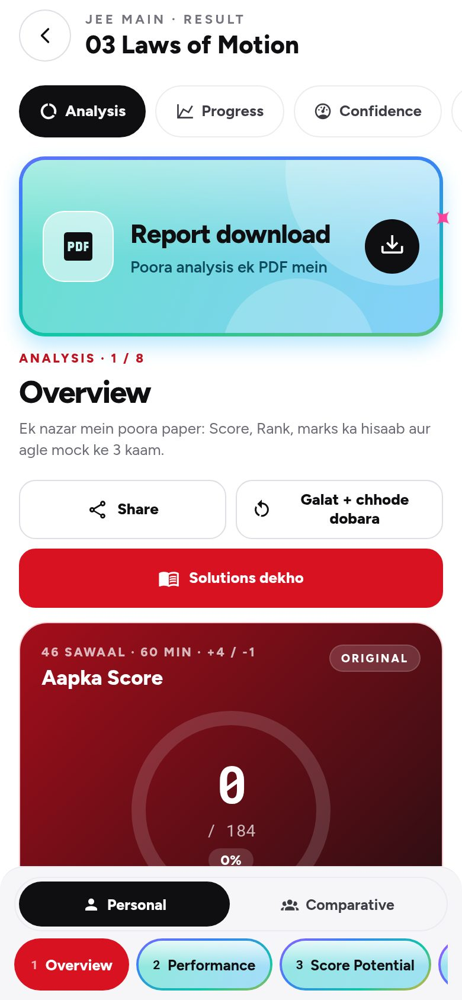

| Part | Colour and type |
|---|---|
| Resting pill face | #A8DCFF → #8CEBD6light sky blue and light teal; they keep changing places |
| Running edge, 2 px | #FF3D9A #FFB020 #10C7A8 #3B82F6 #9B5CFFpink, gold, aqua, blue, violet |
| Gloss | rgba(255,255,255,0.78) |
| Glint | rgba(255,255,255,0.95) band 22 px |
| Words on a resting pill | #0F0F12 number: Roboto Mono 700, 10.5 px · name: Figtree 700, 12.5 px |
| Open pill (unchanged) | #D91222 solid, no shine · name white, Figtree 800, 12.5 px · number rgba(248,250,252,0.72) |
| Bar behind the pills | #F6F6F8 top line #ECECF0 top corners 20 px |
<!-- Resting section pill (pill number i) -->
<div class="jl-shine" data-part="32"
style="--r:999px; --ring:2px; --tone-a:#A8DCFF; --tone-b:#8CEBD6; --gloss:rgba(255,255,255,0.78);
--glint:rgba(255,255,255,0.95); --band:22px; --delay:calc(i * 160ms)">
<div class="jl-ring"><i class="jl-edge"></i>
<div class="jl-face">
<i class="jl-tones"></i><i class="jl-swap"></i><i class="jl-gloss"></i><i class="jl-glint"></i>
<span class="num">2</span> <span>Performance</span>
</div>
</div>
</div>Where: Result screen → Analysis tab → top of every one of the eight sections.
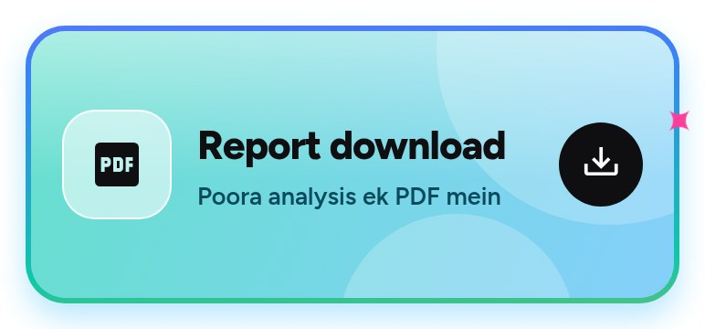
| Part | Colour and type |
|---|---|
| Face | #86CFFB → #66E0CCsky blue and aqua; they keep changing places |
| Running edge, 3 px | #FF3D9A #FFB020 #10C7A8 #3B82F6 #9B5CFFpink, gold, aqua, blue, violet |
| Gloss / glint | rgba(255,255,255,0.46)rgba(255,255,255,0.92) band 72 px |
| Three stars, 16 px | #FFB020 at 15 % from the left, on the top edge · #FF3D9A on the right edge, 34 % down · #3B82F6 at 68 % from the left, on the bottom edge |
| Glow under the card | box-shadow: 0 8px 16px rgba(56,189,248,0.34) #38BDF8 |
| Two soft circles on the face | rgba(255,255,255,0.22) 190 px circle at right −60, top −84 · 130 px circle at right 54, bottom −84 |
| Icon badge | 60 × 60, radius 18 rgba(255,255,255,0.55) 1 px line rgba(255,255,255,0.9) PDF icon 32 px #0F0F12 |
| Title | “Report download” Figtree 800, 22 px, letter-spacing −0.5 #0F0F12 |
| Second line | “Poora analysis ek PDF mein” Figtree 600, 13.5 px #0B4A5C |
| Round button | 46 px circle #0F0F12 white download icon 22 px |
<!-- Report download card -->
<div class="jl-shine" data-part="46"
style="--r:22px; --ring:3px; --tone-a:#86CFFB; --tone-b:#66E0CC; --gloss:rgba(255,255,255,0.46);
--glint:rgba(255,255,255,0.92); --band:72px;
background:#86CFFB; box-shadow:0 8px 16px rgba(56,189,248,0.34)">
<div class="jl-ring"><i class="jl-edge"></i>
<div class="jl-face">
<i class="jl-tones"></i><i class="jl-swap"></i><i class="jl-gloss"></i><i class="jl-glint"></i>
... badge, words, round button ...
</div>
</div>
</div>
<!-- after .jl-ring, inside .jl-shine: three stars (path in Appendix A note) -->
<svg class="jl-spark" style="left:15%; top:0%; animation-delay:500ms" viewBox="0 0 24 24"><path d="..." fill="#FFB020"/></svg>
<svg class="jl-spark" style="left:100%; top:34%; animation-delay:2233ms" viewBox="0 0 24 24"><path d="..." fill="#FF3D9A"/></svg>
<svg class="jl-spark" style="left:68%; top:100%; animation-delay:3967ms" viewBox="0 0 24 24"><path d="..." fill="#3B82F6"/></svg>
Star path (24 × 24 box): M12 0 C12.8 7 17 11.2 24 12 C17 12.8 12.8 17 12 24 C11.2 17 7 12.8 0 12 C7 11.2 11.2 7 12 0 Z
Where: My Tests screen → the row of tabs under the title.
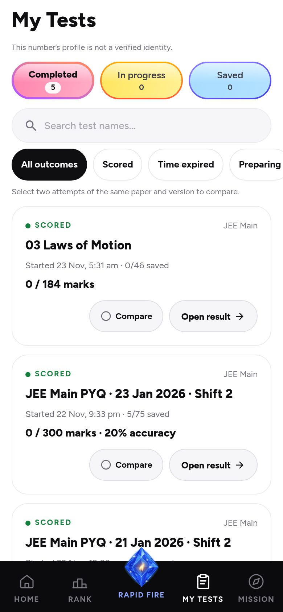
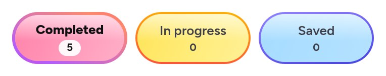
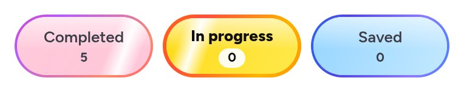
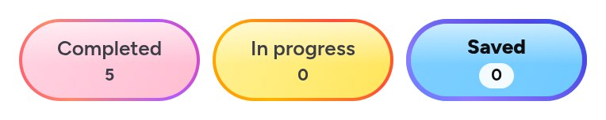
| Tab | Open face | Resting face | Running edge (its own family) | Glow when open |
|---|---|---|---|---|
| Completed Baby pink | #FFAFC9 → #FF82AB | #FFD3E1 → #FFBDD2 | #FF2D7A #B45CFF #FF8A6Brose, orchid, coral | #FF4D8F |
| In progress Yellow | #FFEE5C → #FFD60A | #FFF29A → #FFE455 | #FF7A00 #FF4F3A #FFB300tangerine, vermilion, gold | #FFA200 |
| Saved Sky blue | #9BDCFF → #52BDFF | #C4E8FF → #96D5FF | #0A84FF #4F46E5 #8E7BFFazure, indigo, periwinkle | #1E90FF |
| Part | Value |
|---|---|
| Order and start | Completed, In progress, Saved. The screen opens on Completed. |
| Gloss / glint (all three) | rgba(255,255,255,0.62)rgba(255,255,255,0.95) |
| Words | Open tab: #0F0F12 Figtree 800, 13 px · resting tab: #3D3D47 Figtree 600, 13 px |
| Count | Figtree 700, 10.5 px, under the name. On the open tab it sits on a white chip rgba(255,255,255,0.92) (min-width 22, height 16, radius 8, padding 0 6 px) |
| Glow of the open tab | box-shadow: 0 4px 9px of the glow colour at 45 % |
| Sizes | Three equal tabs, 8 px apart, row 52 px high: resting 48 px face + 2 px edge; open 46 px face + 3 px edge |
| Rule | A colour never moves to another tab: pink is always Completed, yellow always In progress, sky blue always Saved. Resting tabs are not grey: they wear a softer wash of their own colour. |
<!-- Completed tab, open (tab number 0). Resting: --ring:2px and the resting colours. -->
<div class="jl-shine" data-part="34"
style="--r:999px; --ring:3px; --edge:#FF2D7A, #B45CFF, #FF8A6B, #FF2D7A; --tone-a:#FFAFC9;
--tone-b:#FF82AB; --gloss:rgba(255,255,255,0.62); --glint:rgba(255,255,255,0.95);
--band:26px; --delay:0ms; background:#FF82AB; box-shadow:0 4px 9px rgba(255,77,143,0.45)">
<div class="jl-ring"><i class="jl-edge"></i>
<div class="jl-face">
<i class="jl-tones"></i><i class="jl-swap"></i><i class="jl-gloss"></i><i class="jl-glint"></i>
<span>Completed</span> <span class="count">5</span>
</div>
</div>
</div>
Where: Home screen → the dark “All India Series” card.
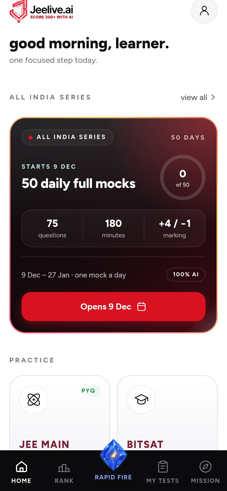
| Part | Colour |
|---|---|
| Running edge, 2 px (new) | #FF2D4A #FFC857 #FF7A93ruby, gold, rosereplaces the old still 1 px line #FFFFFF1A |
| Gloss (new) | rgba(255,255,255,0.11) very soft: the card is dark |
| Glint (new) | rgba(255,255,255,0.26) band 96 px, corner to corner |
| Face (unchanged) | corner to corner: #0B0B0D 0 % #17090D 55 % #3A0912 100 % |
| Red glow, top right (unchanged) | #E11D2E at 45 % fading to 0: an ellipse 75 % wide, 65 % high, centred at 96 % / 0 % |
| Hairline on the top edge (unchanged) | 1 px high, 28 px in from each side: clear rgba(255,255,255,0.24) clear |
| Words and button (unchanged) | white #FFFFFF soft white rgba(248,250,252,0.72) button #D91222 glass boxes #FFFFFF09 with line #FFFFFF1A |
<!-- Home: All India Series card -->
<div class="jl-shine" data-part="46" data-corner
style="--r:28px; --ring:2px; --edge:#FF2D4A, #FFC857, #FF7A93, #FF2D4A;
--gloss:rgba(255,255,255,0.11); --glint:rgba(255,255,255,0.26); --band:96px">
<div class="jl-ring"><i class="jl-edge"></i>
<div class="jl-face">
<i class="bg"></i><i class="sheen"></i><i class="jl-gloss"></i><i class="jl-glint"></i>
... the card's content ...
</div>
</div>
</div>
.bg { inset:0; background: radial-gradient(ellipse 75% 65% at 96% 0%, rgba(225,29,46,.45), rgba(225,29,46,0)),
linear-gradient(var(--ta,135deg), #0B0B0D 0%, #17090D 55%, #3A0912 100%); }
.sheen { top:0; left:28px; right:28px; height:1px; background: linear-gradient(90deg, transparent, rgba(255,255,255,.24), transparent); }Where: All India Series page → the first card (days done, streak, cups).
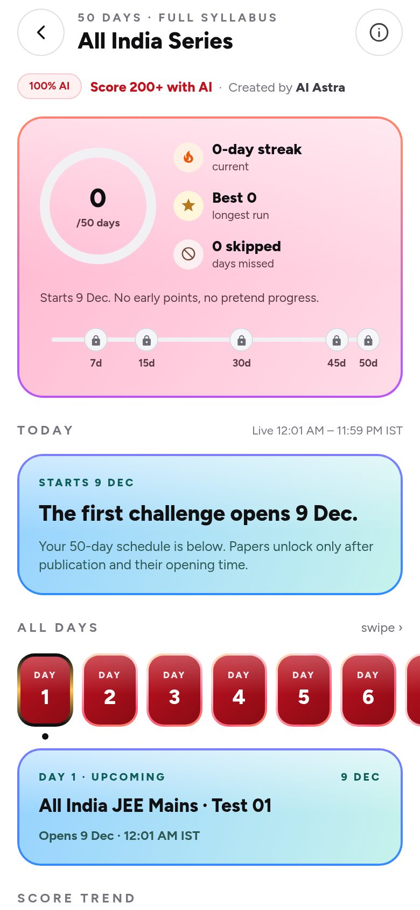
| Part | Colour |
|---|---|
| Face | #FFDCE8 → #FFB5CEtwo baby pinks; they keep changing places |
| Running edge, 2 px | #FF2D7A #B45CFF #FF8A6Brose, orchid, coralthe same family as the Completed tab |
| Gloss / glint | rgba(255,255,255,0.55)rgba(255,255,255,0.92) band 84 px, corner to corner |
| Big words and numbers | #0F0F12 |
| Small words on the pink | #5B3A46 rose ink (was grey #74747E) |
| Progress ring | track #F1F1F4 filled part: teal to green #0D9488 → #3A6B1F 108 px, 9 px stroke |
| Three facts (icon on a soft circle) | streak #EA580C on #FFF0E6 · best #B7791F on #FFF6DB · skipped #7A4A3C on #FBEFF1 |
| Cup line | line #F1F1F4 filled #3A6B1F · locked cup #F6F6F8 line #D9D9DF · earned cup #B7791F |
<!-- Series page: streak card -->
<div class="jl-shine" data-part="46" data-corner
style="--r:24px; --ring:2px; --edge:#FF2D7A, #B45CFF, #FF8A6B, #FF2D7A; --tone-a:#FFDCE8;
--tone-b:#FFB5CE; --gloss:rgba(255,255,255,0.55); --glint:rgba(255,255,255,0.92);
--band:84px">
<div class="jl-ring"><i class="jl-edge"></i>
<div class="jl-face">
<i class="jl-tones"></i><i class="jl-swap"></i><i class="jl-gloss"></i><i class="jl-glint"></i>
... ring, three facts, cup line ...
</div>
</div>
</div>Where: All India Series page → the “Today” card and the card of the day chosen in the chip row.
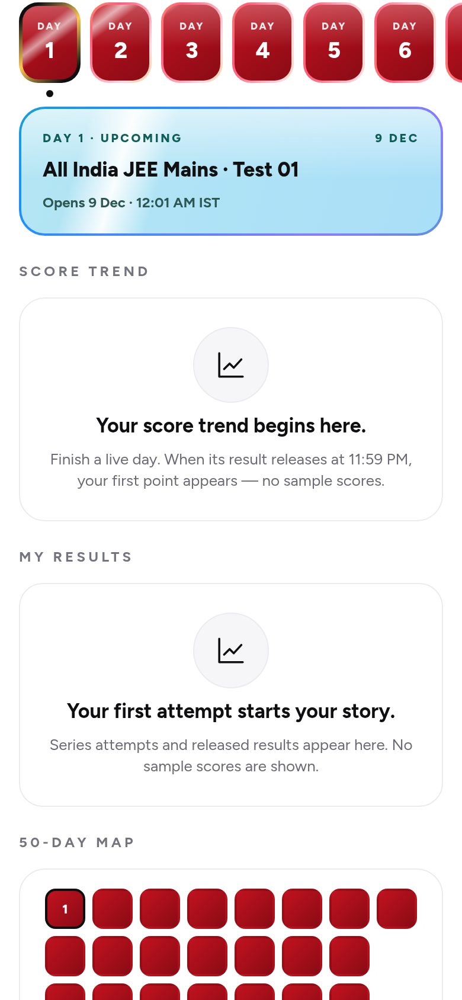
#96D2FF. Today, Done and Missed keep their pastels; they only gained the shine.#111114.#111114 with the status's light colour for its words: 50 px high on the Today card, 44 px on the selected-day card.| Status | Face | Ink (caps line) | Body words | Words on the dark button | Running edge |
|---|---|---|---|---|---|
| Today Peach to pink | #FFDDBF → #FFB9CC | #8A3350 | #5B4048 | #FFE3D6 | #FF6B4A #FF2D7A #FFB300coral, rose, gold |
| Done Soft green | #DDF5C8 → #BCE8A2 | #3A6B1F | #44603A | #DDF5C8 | #22A45D #9BD22F #10B5A0emerald, lime, teal |
| Upcoming Teal to sky blue | #C7F2EC → #96D2FF (second colour was #8FDDD3) | #0F5F58 | #2C5753 | #D2F6F1 | #10B5A0 #1E90FF #8E7BFFteal, azure, lavender |
| Missed Sand | #F3E7D8 → #ECD6DC | #7A4A3C | #5E4A44 | #F3E7D8 | #C08552 #D4728C #E0B15Cbronze, dusty rose, sand |
| Shared by all four | Value |
|---|---|
| Gloss / glint | rgba(255,255,255,0.55)rgba(255,255,255,0.92) band 72 px, corner to corner |
Where: All India Series page → “All days” row (DAY 1, DAY 2, DAY 3 ... swipe sideways).
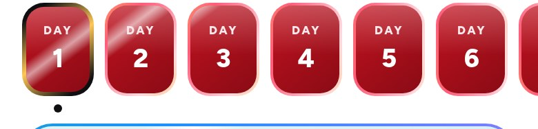
| Look | Face | Day number | Small word | Running edge | Gloss / glint |
|---|---|---|---|---|---|
| Blood red a day still to come | #C1121F → #8A0B15 | #FFFFFF | #FFE9EC | #FFC857 #FF5C7A #FFD9E0gold, rose, pearl | rgba(255,255,255,0.26)rgba(255,255,255,0.58) |
| Parrot green a day that is over: paper taken or missed | #96EA3A → #46BE1B | #0F0F12 | #123F08 | #FFE14D #0B8A43 #DFFF94sun yellow, emerald, lime | rgba(255,255,255,0.42)rgba(255,255,255,0.85) |
| Peach to pink today | #FFDDBF → #FFB9CC | #111114 | #8A3350 | #FF6B4A #FF2D7A #FFB300coral, rose, gold | rgba(255,255,255,0.55)rgba(255,255,255,0.92) |
| Part | Value |
|---|---|
| Chosen day | 3 px edge: black with one gold light running round it #0F0F12 #0F0F12 #FFC857 #0F0F12 and a 6 px dot #0F0F12 under the chip |
| Sizes | 52 px wide, 68 px high (64 px face + 2 px edge; chosen 62 px + 3 px), radius 16, 8 px apart |
| Words | small word “DAY” or “TODAY”: Figtree 800, 8.5 px, letter-spacing 1.2 · day number: Figtree 800, 19 px |
jl-swap.shine.js does this by itself.<!-- Day chip, still to come (chip number i) -->
<div class="jl-shine" data-part="38" data-corner
style="--r:16px; --ring:2px; --edge:#FFC857, #FF5C7A, #FFD9E0, #FFC857; --tone-a:#C1121F;
--tone-b:#8A0B15; --gloss:rgba(255,255,255,0.26); --glint:rgba(255,255,255,0.58);
--band:18px; --delay:calc((i % 8) * 140ms)">
<div class="jl-ring"><i class="jl-edge"></i>
<div class="jl-face">
<i class="jl-tones"></i><i class="jl-gloss"></i><i class="jl-glint"></i>
<span class="word">DAY</span> <span class="num">4</span>
</div>
</div>
</div>Where: All India Series page → “50-day map” card near the bottom.
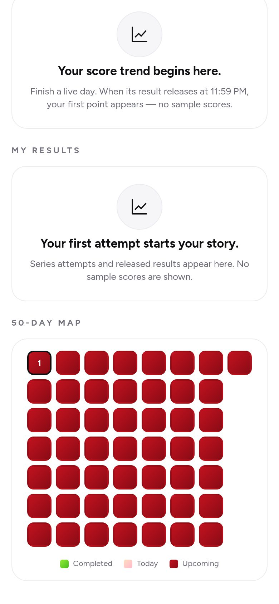
| Part | Colour |
|---|---|
| Day still to come | #C1121F → #8A0B15 blood red |
| Day that is over | #96EA3A → #46BE1B parrot green |
| Today | #FFDDBF → #FFB9CC peach to pink |
| Today and the chosen day | 2 px line #0F0F12 and the day number inside (Figtree 800, one third of the cell) in that look's number colour |
| Card behind | #FFFFFF 1 px line #ECECF0 radius 22, padding 16 |
| Legend | Completed, Today, Upcoming: 12 px squares (radius 3) + Figtree 400, 11 px #6B6B75 |
<!-- one cell of the map -->
<div style="width:34px; height:34px; border-radius:9px; border:2px solid transparent; background-origin:border-box;
background-image: linear-gradient(135deg, #C1121F, #8A0B15)"></div> <!-- to come -->
... linear-gradient(135deg, #96EA3A, #46BE1B) ... <!-- over -->
... linear-gradient(135deg, #FFDDBF, #FFB9CC); border-color:#0F0F12 ... 13 <!-- today -->Where: Rank tab → the six tiles at the top (two per row).
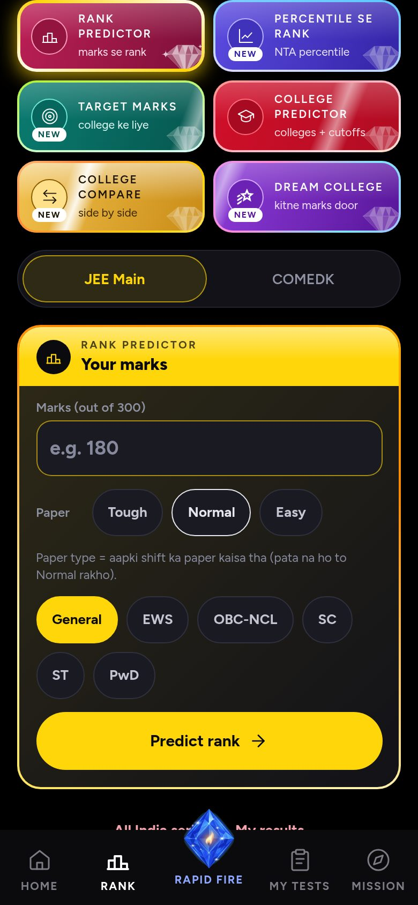
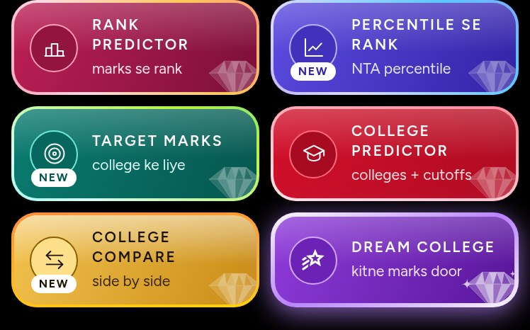
| Tile | Face | Icon circle / its ring | Title / small line | Running edge | Chosen: glow + edge colour |
|---|---|---|---|---|---|
| Rank Predictor Maroon | #BC1F55 → #7C1038 | #93143F#FF9DBA | #FFFFFF#FFE1EA | #FF7AA2 #FFC857 #FFD9E4rose, gold, blush | #FFD60A |
| Percentile Se Rank Indigo | #5B4BE0 → #3323A6 | #4132BC#B9B0FF | #FFFFFF#E6E2FF | #9D8CFF #5CC8FF #E0DBFFlavender, sky, pale lilac | #2DE1C2 |
| Target Marks Teal | #0A7B70 → #06574F | #07665D#6FE9D7 | #FFFFFF#DFFBF6 | #3DE0C8 #B5F23D #D5FFF7aqua, lime, mint | #B5F23D |
| College Predictor Blood red | #D10F2A → #B00C22 | #A80B21#FF6B78 | #FFFFFF#FFE1E5 | #FFC857 #FF8FA0 #FFE1E5gold, rose, pearl | #FF4D5E |
| College Compare Gold | #F2C14E → #C98C16 | #FFE08A#8A5D00 | #1C1300#3A2700 | #FFF3C4 #FF8A3D #FFD60Acream, tangerine, sun yellow | #4CC3FF |
| Dream College Violet | #8E3BD9 → #58169A | #6C22B5#D2A8FF | #FFFFFF#F0E2FF | #C9A0FF #FF8AD8 #7FE7FFlilac, pink, cyan | #B983FF |
| Part | Value |
|---|---|
| Gloss / glint | five dark tiles: rgba(255,255,255,0.22)rgba(255,255,255,0.5) · gold tile (light): rgba(255,255,255,0.5)rgba(255,255,255,0.9) |
| Chosen tile | 3 px edge where the form's colour and white chase each other (colour, white, colour, white, colour) + glow box-shadow: 0 4px 18px of that colour at 70 %. Its diamond is brighter (75 % instead of 45 %). |
| Sizes | Two tiles per row, 8 px gaps, 64 px high (60 px face + 2 px edge; chosen 58 px + 3 px), radius 18, padding 9 px 11 px |
| Icon | 34 px circle with a 1 px ring, icon 17 px in the title colour |
| Words | title: Figtree 600, 10.5 px, capitals, letter-spacing 1.2 · small line: Figtree 400, 10.5 px |
| NEW badge | white pill #FFFFFF on the bottom edge of the icon circle; word Figtree 700, 8 px in the tile's deep colour. Hidden on the chosen tile. |
| Diamond | 46 px wide faceted diamond in white, in the bottom-right corner (right −8, bottom −9), under the gloss |
| Page behind | #000000 the Rank tab stays black; only tiles and forms carry colour |
#1C1300 on the gold tile.Where: Rank tab → the form that opens under the tiles (one per tool).
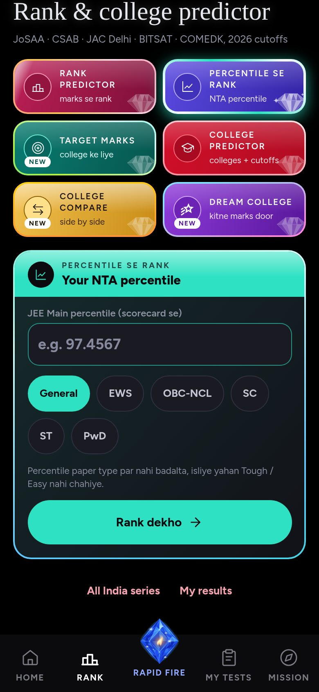
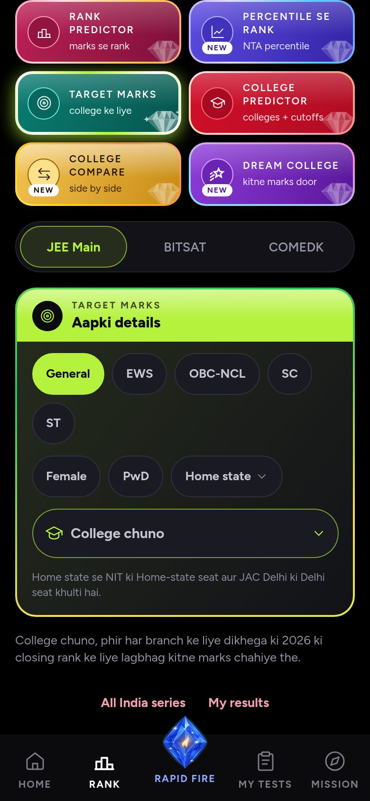
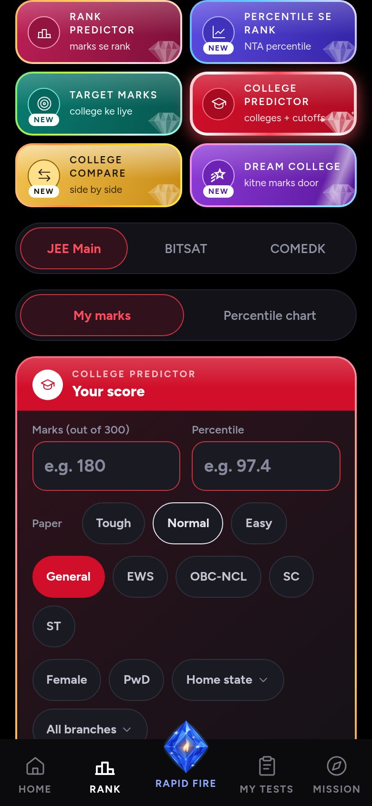
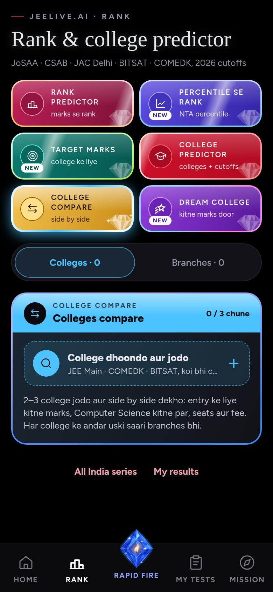
APP Percentile se rank (teal), Target marks (lime), College predictor (blood red), College compare (sky blue)
WEB a light-band form (Rank predictor) and a deep-band form (College predictor) drawn with shine.css, with the exam switch above each (drawn 320 px wide to fit this page; 358 px in the app)
| Form | Form colour | Words on it | Its colour for words on black | Soft wash / frame line | Running edge | Header band |
|---|---|---|---|---|---|---|
| Rank predictor Bright yellow | #FFD60A | #0B0B0F | #FFD60A | rgba(255,214,10,0.12)rgba(255,214,10,0.62) | #FFD60A #FF8A00 #FFF3B0yellow, tangerine, cream | light band: strong shine |
| Percentile se rank Teal | #2DE1C2 | #0B0B0F | #2DE1C2 | rgba(45,225,194,0.12)rgba(45,225,194,0.62) | #2DE1C2 #5CC8FF #D5FFF7aqua, sky blue, mint | light band: strong shine |
| Target marks Lime | #B5F23D | #0B0B0F | #B5F23D | rgba(181,242,61,0.12)rgba(181,242,61,0.62) | #B5F23D #FFE14D #22C55Elime, sun yellow, emerald | light band: strong shine |
| College predictor Blood red | #D10F2A | #FFFFFF | #FF4D5E | rgba(209,15,42,0.16)rgba(255,59,78,0.75) | #FF3B4E #FFC857 #FF8FA0ruby, gold, rose | deep band: soft shine |
| College compare Sky blue | #4CC3FF | #0B0B0F | #4CC3FF | rgba(76,195,255,0.12)rgba(76,195,255,0.62) | #4CC3FF #2F80FF #B9B0FFsky blue, azure, lavender | light band: strong shine |
| Dream college Violet | #7B2CBF | #FFFFFF | #B983FF | rgba(123,44,191,0.18)rgba(185,131,255,0.65) | #B983FF #FF8AD8 #7FE7FFlilac, pink, cyan | deep band: soft shine |
| Part | Value |
|---|---|
| Panel | radius 22, body #121218 (stays dark), padding 15.5 px, 12 px between rows. Top-left wash of the soft colour fading out towards the middle. |
| Glow round the panel | box-shadow: 0 0 18px of the form's “words on black” colour at 45 % |
| Running edge | 2 px, three colours of the form's own family. No gloss or glint on the body: the fields must stay calm. |
| Header band | runs edge to edge at the top, filled with the form colour. Light bands (yellow, teal, lime, sky blue): gloss rgba(255,255,255,0.46) glint rgba(255,255,255,0.9). Deep bands (blood red, violet): gloss rgba(255,255,255,0.18) glint rgba(255,255,255,0.5). |
| In the band | 32 px circle in the “words on it” colour with the tool icon in the form colour · tool name: Figtree 700, 10 px, capitals, letter-spacing 1.6, 72 % opacity · title: Figtree 800, 15.5 px |
| Inside the form | text field: 52 px high, radius 14, #1A1A23, line = frame line · chosen chip: form colour with “words on it” · other chips #1A1A23 line #30303E words #C3C6D0 · main button: 54 px pill in the form colour |
| Exam switch above the form | chosen side: frame line, soft wash, words in the “words on black” colour · others #8F92A3 |
data-rest).<!-- Rank form panel (Rank predictor). The header band is a second Shine inside it, without an edge. -->
<div class="jl-shine"
style="--r:22px; --ring:2px; --edge:#FFD60A, #FF8A00, #FFF3B0, #FFD60A;
background:#121218; box-shadow:0 0 18px rgba(255,214,10,0.45)">
<div class="jl-ring"><i class="jl-edge"></i>
<div class="jl-face" style="padding:15.5px; background:#121218"><i class="wash"></i>
<div style="margin:-15.5px -15.5px 0; background:#FFD60A"> <!-- header band -->
<div class="jl-shine" data-part="36"
style="--r:0px; --ring:0px; --band:34px;
--gloss:rgba(255,255,255,0.46); --glint:rgba(255,255,255,0.9)">
<div class="jl-ring">
<div class="jl-face"><i class="jl-gloss"></i><i class="jl-glint"></i>
... icon circle, tool name, title ...
</div>
</div>
</div>
</div>
... fields, chips, main button ...
</div>
</div>
</div>
.wash { inset:0;
background: linear-gradient(to bottom right, rgba(255,214,10,0.12), rgba(255,255,255,0) 62%); }transform and opacity (the supplied CSS does). Never animate gradient angles, background-position, box-shadow, filter, width or height.backdrop-filter or filter: blur() for them.shine.js). Add data-rest to pieces in a hidden tab pane or under an open sheet or dialog.prefers-reduced-motion: reduce everything stands still: coloured edge, gloss, no glint, no swap, no stars. Already in the CSS.| Piece | Words | Contrast |
|---|---|---|
| Analysis pills and Report card | near-black on every tone | 11 : 1 or more (card's second line 5.7 : 1) |
| My Tests tabs | open #0F0F12 resting #3D3D47 | 6.5 : 1 or more |
| Streak card | small words #5B3A46 | 6 : 1 or more |
| Blood-red chip | white | 6 : 1 or more |
| Parrot-green chip | black | 7 : 1 or more |
| Rank tiles | white; near-black on gold | 5 : 1 or more; gold 6 : 1 or more |
| Rank form header | near-black on light bands; white on blood red and violet | 4.5 : 1 or more |
| Values | |
|---|---|
| Light pages | page #FFFFFF words #0F0F12 soft words #6B6B75 card line #ECECF0 bar #F6F6F8 brand red #D91222 |
| Rank tab (dark) | page #000000 panel #121218 raised #1A1A23 line #23232E strong line #30303E words #E6E8EE soft words #8F92A3 |
| Type | Figtree 400 / 500 / 600 / 700 / 800 for words · Roboto Mono 400 / 700 for numbers |
| Shape | radius: 6, 12, 20, pill 999 · spacing steps: 4, 8, 12, 16, 24, 32, 48 |
Tick each line on the mobile website next to the app.
JLShine.watch() called after lists load.Open the app and the mobile website side by side on the same phone width. Each piece should match the “APP” pictures in Section 3: same colours, same size, the edge running at the same speed, and the glint crossing in the same direction.
Copy as it is. The colours are not in this file: each piece passes its own through the -- settings.
/* ==========================================================================
JEELIVE.AI - Shine for the web (same look as the app's Shine.tsx)
Layers, bottom to top:
running edge -> face colours -> colour swap -> gloss -> glint -> YOUR CONTENT (+ stars, outside the edge)
Only `transform` and `opacity` move, so the browser animates it on the GPU.
Needs shine.js once per page (it measures each piece for the edge and the glint).
========================================================================== */
.jl-shine { position: relative; display: flex; flex-direction: column; border-radius: var(--r, 20px); }
.jl-ring { position: relative; display: flex; flex-direction: column; flex: 1 1 auto;
overflow: hidden; isolation: isolate; /* isolation: Safari clips the turning edge correctly */
border-radius: var(--r, 20px); padding: var(--ring, 2px); }
.jl-face { position: relative; flex: 1 1 auto; overflow: hidden;
border-radius: max(0px, calc(var(--r, 20px) - var(--ring, 2px))); }
/* every light layer is an <i>; everything else inside the face is your content and stays above the light */
.jl-edge, .jl-face > i { position: absolute; display: block; pointer-events: none; }
.jl-face > :not(i) { position: relative; z-index: 1; }
/* 1. RUNNING EDGE: a square as wide as the piece's diagonal, filled corner to corner, turning behind the face */
.jl-edge { left: 50%; top: 50%; width: var(--d, 200%); height: var(--d, auto); aspect-ratio: 1 / 1; translate: -50% -50%;
background: linear-gradient(135deg, var(--edge, #FF3D9A, #FFB020, #10C7A8, #3B82F6, #9B5CFF, #FF3D9A));
animation: jl-spin 4200ms linear var(--delay, 0ms) infinite; }
/* 2. FACE COLOURS, corner to corner (top-left -> bottom-right) */
.jl-face > i.jl-tones { inset: 0; background: linear-gradient(var(--ta, 135deg), var(--tone-a), var(--tone-b)); }
/* 3. COLOUR SWAP: the same two colours the other way round fade in and out, so they keep changing places */
.jl-face > i.jl-swap { inset: 0; opacity: 0; background: linear-gradient(var(--ta, 135deg), var(--tone-b), var(--tone-a));
animation: jl-swap 5600ms ease-in-out calc(var(--delay, 0ms) * 3) infinite; }
/* 4. GLOSS: soft white light on the upper 56 % of the face */
.jl-face > i.jl-gloss { left: 0; right: 0; top: 0; height: 56%;
background: linear-gradient(180deg, var(--gloss), rgba(255, 255, 255, 0)); }
/* 5. GLINT: a band of glass light that crosses the face, then waits outside it */
.jl-face > i.jl-glint { left: 0; top: -30px; bottom: -30px; width: var(--band, 24px); visibility: hidden;
background: linear-gradient(90deg, rgba(255, 255, 255, 0), var(--glint), rgba(255, 255, 255, 0));
transform: translate(var(--gx0, 0), var(--gy0, 0)) rotate(var(--ga, 20deg));
animation: jl-glint-40 3600ms ease-in-out var(--delay, 0ms) infinite; }
.jl-shine[data-ready] > .jl-ring > .jl-face > i.jl-glint { visibility: visible; }
/* corner path: the band lies across the card and travels from the top-left corner to the bottom-right corner */
.jl-shine[data-corner] > .jl-ring > .jl-face > i.jl-glint {
left: calc(50% - var(--band, 24px) / 2); top: calc(50% - var(--gl, 0px) / 2); bottom: auto; height: var(--gl, 0px); }
/* `data-part` = the share of the 3.6 s cycle in which the glint crosses (it waits for the rest) */
.jl-shine[data-part="32"] > .jl-ring > .jl-face > i.jl-glint { animation-name: jl-glint-32; }
.jl-shine[data-part="34"] > .jl-ring > .jl-face > i.jl-glint { animation-name: jl-glint-34; }
.jl-shine[data-part="36"] > .jl-ring > .jl-face > i.jl-glint { animation-name: jl-glint-36; }
.jl-shine[data-part="38"] > .jl-ring > .jl-face > i.jl-glint { animation-name: jl-glint-38; }
.jl-shine[data-part="46"] > .jl-ring > .jl-face > i.jl-glint { animation-name: jl-glint-46; }
/* 6. STARS (report card only): three 16 px stars twinkle on the edge, one after another */
.jl-spark { position: absolute; z-index: 2; width: 16px; height: 16px; margin: -8px 0 0 -8px; opacity: 0;
pointer-events: none; animation: jl-spark 5200ms ease-out infinite; }
@keyframes jl-spin { to { transform: rotate(360deg); } }
@keyframes jl-swap { 0%, 100% { opacity: 0; } 50% { opacity: 1; } }
@keyframes jl-spark {
0% { opacity: 0; transform: scale(0.2) rotate(0deg); }
9% { opacity: 1; transform: scale(1) rotate(45deg); }
18%, 100% { opacity: 0; transform: scale(0.2) rotate(90deg); }
}
@keyframes jl-glint-32 { 0% { transform: translate(var(--gx0), var(--gy0)) rotate(var(--ga)); }
32%, 100% { transform: translate(var(--gx1), var(--gy1)) rotate(var(--ga)); } }
@keyframes jl-glint-34 { 0% { transform: translate(var(--gx0), var(--gy0)) rotate(var(--ga)); }
34%, 100% { transform: translate(var(--gx1), var(--gy1)) rotate(var(--ga)); } }
@keyframes jl-glint-36 { 0% { transform: translate(var(--gx0), var(--gy0)) rotate(var(--ga)); }
36%, 100% { transform: translate(var(--gx1), var(--gy1)) rotate(var(--ga)); } }
@keyframes jl-glint-38 { 0% { transform: translate(var(--gx0), var(--gy0)) rotate(var(--ga)); }
38%, 100% { transform: translate(var(--gx1), var(--gy1)) rotate(var(--ga)); } }
@keyframes jl-glint-40 { 0% { transform: translate(var(--gx0), var(--gy0)) rotate(var(--ga)); }
40%, 100% { transform: translate(var(--gx1), var(--gy1)) rotate(var(--ga)); } }
@keyframes jl-glint-46 { 0% { transform: translate(var(--gx0), var(--gy0)) rotate(var(--ga)); }
46%, 100% { transform: translate(var(--gx1), var(--gy1)) rotate(var(--ga)); } }
/* REST: the piece is off screen (data-off, set by shine.js), told to rest (data-rest), or the user asked for less motion.
The edge stands still as a coloured slope, the gloss stays, the swap, the glint and the stars are not drawn. */
.jl-shine[data-off] > .jl-ring > .jl-edge, .jl-shine[data-rest] > .jl-ring > .jl-edge { animation: none; }
.jl-shine[data-off] > .jl-ring > .jl-face > i.jl-swap, .jl-shine[data-rest] > .jl-ring > .jl-face > i.jl-swap,
.jl-shine[data-off] > .jl-ring > .jl-face > i.jl-glint, .jl-shine[data-rest] > .jl-ring > .jl-face > i.jl-glint,
.jl-shine[data-off] > .jl-spark, .jl-shine[data-rest] > .jl-spark { display: none; }
@media (prefers-reduced-motion: reduce) {
.jl-edge { animation: none; }
.jl-face > i.jl-swap, .jl-face > i.jl-glint, .jl-spark { display: none; }
}
Load once, after the page's HTML (or with defer). No library needed.
/* JEELIVE.AI - Shine for the web. Measures every .jl-shine once (and again when its size changes):
the size of the turning edge, the slope of the face colours and the path of the glint.
It also rests a piece while it is off screen. No library needed. */
(function () {
function px(n) { return Math.round(n * 100) / 100 + "px"; }
function size(el) {
var ring = el.querySelector(":scope > .jl-ring");
if (!ring) return;
var w = ring.offsetWidth, h = ring.offsetHeight;
if (!w || !h) return;
var cs = getComputedStyle(el), s = el.style;
var edge = parseFloat(cs.getPropertyValue("--ring")) || 0, band = parseFloat(cs.getPropertyValue("--band")) || 0;
var fw = w - edge * 2, fh = h - edge * 2, slope = Math.atan2(fh, fw) * 180 / Math.PI;
s.setProperty("--d", Math.ceil(Math.hypot(w, h)) + 4 + "px"); /* the turning square = the diagonal + 4 */
s.setProperty("--ta", (90 + slope).toFixed(2) + "deg"); /* face colours run exactly corner to corner */
if (el.hasAttribute("data-corner")) { /* glint: corner to corner */
var diagonal = Math.hypot(fw, fh), reach = diagonal / 2 + band;
var x = fw / diagonal * reach, y = fh / diagonal * reach;
s.setProperty("--gx0", px(-x)); s.setProperty("--gy0", px(-y));
s.setProperty("--gx1", px(x)); s.setProperty("--gy1", px(y));
s.setProperty("--ga", slope.toFixed(2) + "deg");
s.setProperty("--gl", Math.ceil(diagonal) + 40 + "px");
} else { /* glint: tilted band, left to right */
var off = Math.ceil((band + (h + 60) * 0.18) / 10) * 10, to = Math.ceil((w + off) / 60) * 60;
s.setProperty("--gx0", -off + "px"); s.setProperty("--gx1", to + "px");
s.setProperty("--gy0", "0px"); s.setProperty("--gy1", "0px"); s.setProperty("--ga", "20deg");
}
el.setAttribute("data-ready", "");
}
var resized = "ResizeObserver" in window ? new ResizeObserver(function (list) {
list.forEach(function (e) { size(e.target); });
}) : null;
var seen = "IntersectionObserver" in window ? new IntersectionObserver(function (list) {
list.forEach(function (e) { e.target.toggleAttribute("data-off", !e.isIntersecting); });
}, { rootMargin: "80px" }) : null;
/* Call JLShine.watch() again after you add new pieces to the page (for example after a list loads). */
function watch(root) {
(root || document).querySelectorAll(".jl-shine").forEach(function (el) {
if (el.jlShine) return;
el.jlShine = true;
size(el);
if (resized) resized.observe(el);
if (seen) seen.observe(el);
});
}
window.JLShine = { watch: watch, size: size };
if (document.readyState === "loading") document.addEventListener("DOMContentLoaded", function () { watch(); });
else watch();
})();